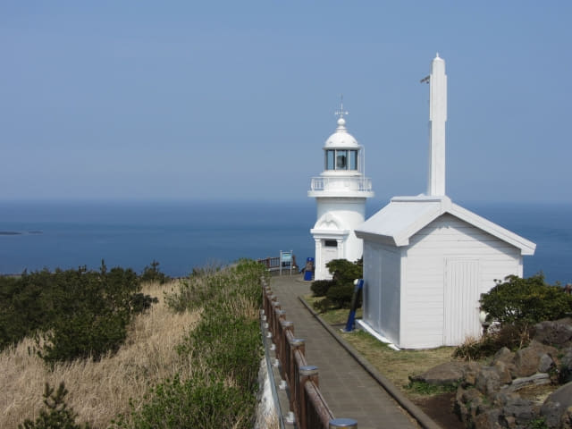
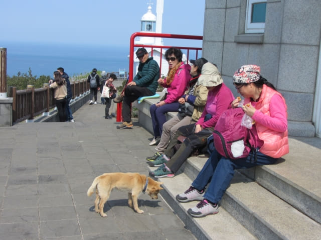

下午一時十分離開牛島黑沙海水浴場, 從牛島峰登山口沿偶來1-1號小路一直往上走, 穿過長長的山脊, 於下午一時四十分抵達高132米的牛島峰山巔, 也是牛島峰燈塔所在的地方。網上所有資料只介紹面前這白色燈塔, 其實牛島峰山巔上是有兩個燈塔的!
牛島峰燈塔 (舊)
牛島峰是牛島的最高峰, 因牛島形狀有如臥牛, 而山巔處於牛頭部分, 所以也被稱為「牛頭峰」。山頂上矗立著白色的牛島燈塔, 是濟州島首座無人燈塔, 建於1906年, 1959年才開始有人駐守。牛島峰燈塔服務了九十七年後, 於2003年11月因老化而棄用。
終於來到牛島峰山巔, 回報是絕美壯麗景色, 不枉此行!
牛島峰燈塔的介紹牌。

登上牛島的最高峰, 當然要拍照留念啦! 日期是2017年3月28日, 時間是下午1:45。
離開白色的舊牛島峰燈塔, 繼續往前走。
牛島燈塔 燈竿
舊牛島峰燈塔前有一座牛島燈塔燈竿。
牛島燈竿是濟州島首座燈塔, 1906年3月首次亮燈, 後來被前方用磚牆搭建的燈台 (舊牛島燈塔)取代, 2005年12月為紀念點燈100周年, 按照原形重建。
來到最前的燈塔。這裡是欣賞舊牛島燈塔的最佳地點。


站在燈塔下, 憑欄而望, 無盡大海, 橫無際涯, 如夢如幻, 實在太美, 太壯觀了。
燈塔一樓開闢成燈塔資料館, 介紹各地的燈塔和有關歷史。還以為自己去了很多地方, 看過這資料館後, 方發覺是井底之蛙!

燈塔門前有一隻汪汪, 四處向經過的遊客索食, 看見牠那麼可憐, 她便將帶來的乾糧和牠分享。
吃完一塊後, 汪汪坐下來凝望著她, 好像很可憐的。
再來一些吧!

汪汪真懂得討她開心, 蹲伏在地上慢慢吃, 狀甚陶醉。
吃完啦! Mum, I want some more!